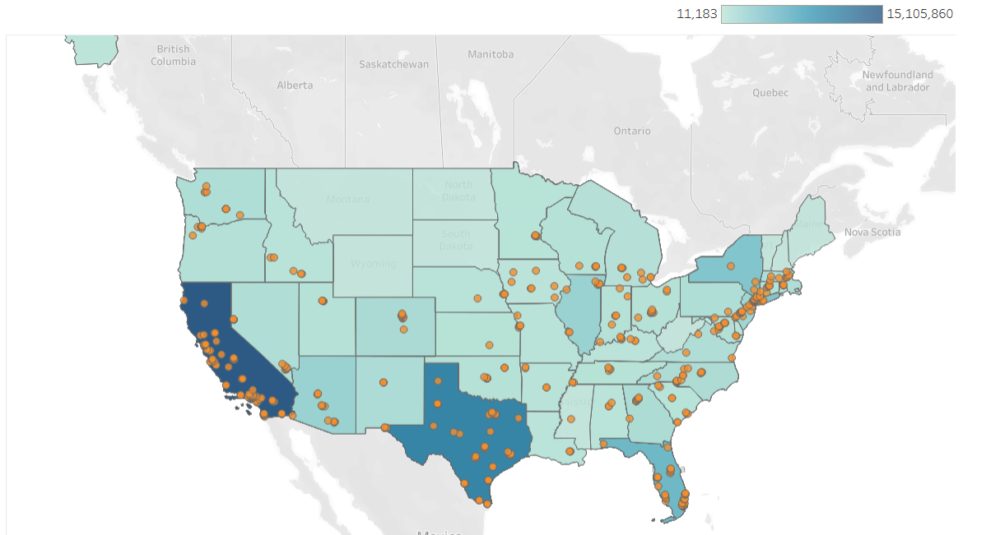
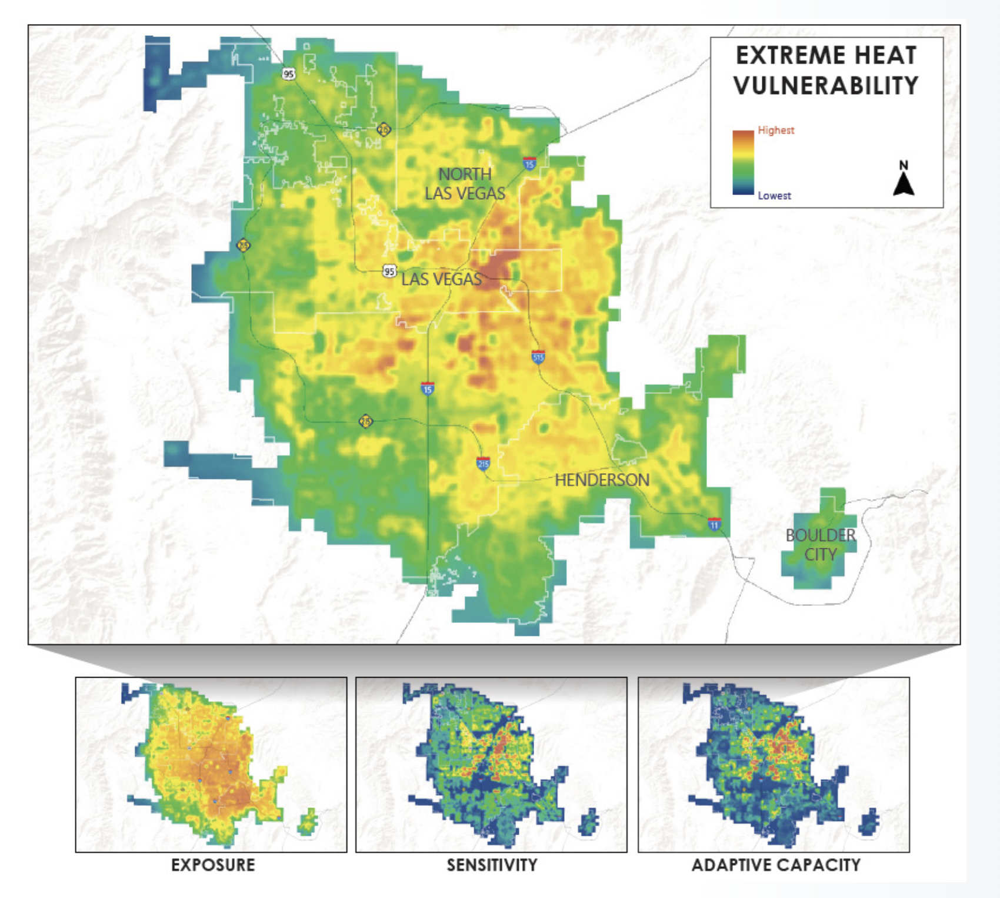
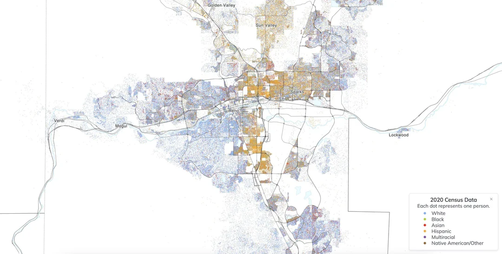
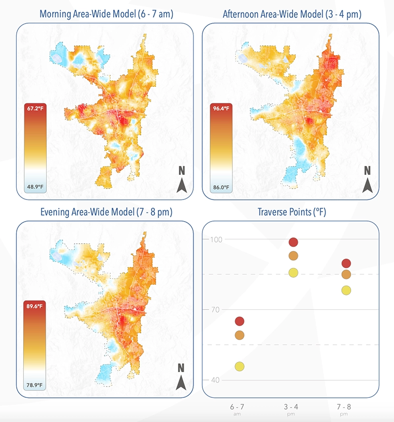
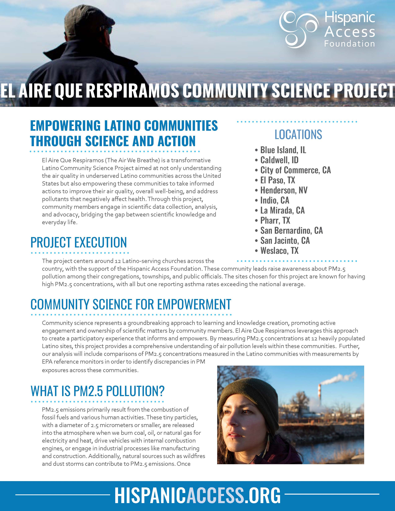

There is a crisis happening across the United States. Ever since the rise of the digital age, the news media have succumbed to buyouts, mergers, and dissolutions, resulting in a more nationally oriented news format and creating information gaps in local communities. When this happens, news deserts form and people lose representation. Ethnic media bear the brunt of this burden, serving communities whose primary language might not be English, leaving people in the dark about what's going on around them.
The Problem
Listen to the Audio Story
The United States is home to almost 65 million Latinos. The Pew Research Center says that it’s the second largest ethnic group in the country, with nearly half of the Latinos in the country being U.S.-born. On top of that, there are about 40 million Spanish speakers in the US, according to the US census, the second most spoken language in the USA.
With a huge demographic presence, it requires a similar solid media to keep its community informed about their day-to-day lives. The State of Latino News Media, a project created in 2019 by the Craig Newmark School of Journalism in New York, found that there are over 600 Spanish-language news outlets, about 550 without factoring in Puerto Rico. Of those 600, 5 states contain over half of these outlets: California, New York, Texas, Florida, and North Carolina.

This leaves states like Nevada that contain nearly a million Latinos with a lack of Spanish-language media. In Washoe alone, the population is impossible to overlook.
Maria Palma is a reporter with KUNR Public Radio and producer of Al Aire, a Spanish language newscast that airs every Friday.
it's probably like 30% of Washoe County's population that speak Spanish, as long as we have those people living here, then services will exist. Services in their own language will exist. And we can't really ignore that we have people here speaking different languages
Palma also notes that in Nevada, the news is concentrated in the two major cities, Las Vegas and Reno.So we know we have a news desert, and I feel in other parts of the state, obviously, not only like talking about Latino communities or Spanish news, we do have a general news desert outside of Reno, outside of Las Vegas. There’s a lot of things going on in rural communities and other parts of the state, and we can't really get to them because we are only like 5, 4 reporters in the newsroom, so it's really hard.”
There is only so much a small newsroom can do. The problem is that when a newsroom has to stretch 4 to 5 reporters for a population of hundreds of thousands, there is news that gets lost and unreported. Which then makes a community feel unheard. Many studies, such as Toward Language Justice in Environmental Health Sciences in the United States: A Case for Spanish as a Language of Science, from the National Library of Medicine, found that the lack of information for Spanish speakers in the USA is leading to Latinos being disproportionately affected by changes in the environment.
Leo Murrieta, Director of Make the Road Nevada, a non-profit that assists Latinos in Nevada with a variety of issues from immigration to environmental justice. They do this through community organizing, year-round policy advocacy, and nonpartisan civic engagement work.
Murrieta said that there is a disparity when it comes to where Latinos settle. Latinos tend to stick together, and form their own communities.
East Las Vegas is where the overwhelming majority of the state's Latine population lives. There's this huge rectangle here in Southern Nevada where I think something like 70% of the whole state's Latino population lives. And there is a drop. There's a literal valley within the valley here in Clark County, and that is where we live.

This is significant because, according to research by the Desert Research Institute, East Las Vegas is one of the Hottest areas in the city due to how urbanized the area is. Concrete and a lack of green space trap heat. This is why Las Vegas is the second fastest-warming city in the country, behind Reno, which also faces a similar issue from its own urbanization. The Desert Research Institute found that the areas around Sun Valley and Wells Avenue are the hottest parts of the city, areas where Latinos in Reno are concentrated.


With Latinos having to live in the warmest parts of the city, this creates a strain on their already struggling finances.
Real people who are having to decide between paying the light bill and paying their rent, between paying the light bill and buying groceriesLeo Murrieta
Hilda Berganza, Climate manager at the Hispanic Access Foundation, leads a project called El Aire Que Respiramos, or the air we breathe. For the past 3 years, the project selected certain cities around the country with concerning air quality and a high population of Latinos. They’ve placed EPA sensors throughout these cities to monitor the air pollutants or PM, and they identify what is in the air. In Las Vegas, particularly in Henderson, the air quality varies a ton.

Henderson is really interesting in the sense of we have had huge spikes of PM 2.5 and then really low levels. And it kind of is dependent on several things. So, you know, any smoke that's coming from, you know, any of the neighboring cities or statesHilda BerganzaThis would show the problems that plague Last Vegas don’t end at the city limits, it stretches far beyond.
This highlights the importance of a Local News outlet that is committed to the community. A more national-oriented outlet for example can talk about a wildfire that is happening in California, and it's on the news because of it’s immidient devastation. And a resident in Nevada wouldn’t think twice about how it impacts them, because it’s more invisible. However, the soot from the wildfire gets carried over and impacts the air quality, polluting the lungs. Which isn’t talked about.
Berganza said that this can make some people alert
How do you feel not knowing that there's a wildfire near you? I don't know, right? Or like, hey, I heard that you have had asthma attacks since you were nine and they're getting worse. What is that like for you? And how is that impacting your medical bill?Hilda Berganza
The Craig Newmark project also mentioned that just because a news outlet exists, it doesn’t mean that all communities are served equally. The project didn’t take public comments; however, in gathering information, the students found that in a major market like San Francisco, which has Latino news outlets, the focus is mainly concentrated in the city. Suburban communities outside the city, such as those in Oakland, don’t feel equally represented.
In a newsroom, the most important types of news are the daily stories, or the big headlines. Those stories are prioritized for being immediately impactful but will often leave other stories left behind, especially in a newsroom stretched so thin. In many cases this creates a delayed reaction, in a state like Nevada where policy can be slow to pass, this is the difference between change happening next week or months.
For example, Murrieta notes that the types of trees planted in a city matter.
In the city of Las Vegas, we primarily only plant male trees, which produce extremely high levels of pollen. And the air flows from the west to the east, which drives all of that pollen and that bad air quality over to the east side, where it sits on the ground and creates some of the highest rates of asthma in the entire state.Leo Murrieta
This is a case of a story that is integral for people to understand, and be aware about. However it doesn’t have the immediate severity as a time sensitive breaking news story, so it gets left behind, leaving it unreported until a reporter decides to pick it up.
While these examples have primarily been focused on Nevada, the patterns can be seen all over the country. Just like the Oakland residents in the San Francisco market, Long Island, New York has a high population of Latinos, but the news outlets are based in New York City leaving those residents in the dark.
Berganza’s project echoes a similar concept.
even if you, know, you're not, there's not an EPA sensor near you, for example, staying alert to what's happening in the environment is going to make a big difference for you, a family, and just your community in general.Hilda Berganza
Ultimately, the biggest issues with having a News Desert isn’t about the lack of reporters or what makes the headlines. It’s about how well informed a community is about the world around them and how safe they are.
not all of us have the same access to internet or, you know, access to Spanish speaking materials across the nation. So sharing that information with your loved ones, you know, if you see it, is super important because that's how we get the word out and people are safe, especially as asthma rates and other rates can increase, are increasing as a whole, but in our community because of these things. So we just want to keep each other safe.Hilda Berganza
This is because Latinos are based in community, they look after one another, which makes putting out stories that pertain to them the most important. Reporters are the bridge that takes those stories and puts them into a community. With a widening News Desert, it’s become increasingly difficult to cover that gap.